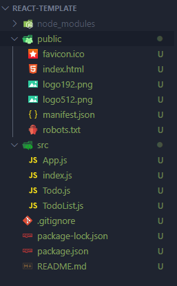
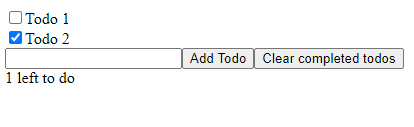
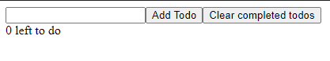

What is react.js?
React is a frontent framework for building user interfaces. Just like with web components, with react you can create modular building blocks that are completely autonomous. The good thing about react is that the state of a component can change without page reload.
Declaritive
With React it is easy to manage the state of your component. Components update and rerender themselves when the data of your component changes. This means no page reload is required when the data is updated.
Component Based
Just like in web components, Reacts components are also fully encapsulated that can manage their own state. This makes it easy to compose these components on a web page without having to worry about code collision.
JSX
In react everything you build is a component. The interesting thing about React is that components can also have subcomponents , which are components that can be used as its own component or can be nested inside another component. This makes React really flexible. JSX is Reacts own version of HTML that allow uou to nest these custom HTML elements.
Differences between states and props
A component in React can both have states and props. The differences between these could be a bit vague at first, as it was also vague for me the first time. The most important difference is that props are handled outside of the component and also must be updated outside the component, while states are handled inside the component and must therefore be handled inside the component.
Another important difference is that any change to a state will rerender that section of your application. Props can't be changed by State and therefore must be updated outside of the component. It could be that the prop is managed by another State outside of the inner component. When that state changes it will change the props given to the inner component and rerender itself. This is very important to understand when you are trying to manage your data using components and subcomponents.
Creating a Todo list with React
I have worked on a small project where you can create a todo list that shows the basic functionality of React. You can do much more things with React, for to keep this article concise I've mainly focussed on the basics. In this article I'll highlight some code from that project to provide some
Setting up
To create a react application to first need an empty folder that has no capital letters of spaces in its name. You can then run the following command in your terminal:
npx create-react-app .
This will install react into your folder. It should take a few minutes to get everything ready. Once all the
files are installed you get a basic application structure for your app. I have deleted all the standard markup
and added files for my todo list.

To run the application you can use
npm start
Rendering the appv
When looking at the index.html file you see that there only is an empty div element.
<div id="root"></div>
When we look at the index.js file in the src folder we see that this empty div is used to render the application.
ReactDOM.render(
<React.StrictMode>
<App />
</React.StrictMode>,
document.getElementById('root')
)
ReactDOM.render() takes two arguments. The first argument takes the App component we want to render and the second take
the element that serves as a target container for the content.
Adding markup
In the App.js component I can now add markup for my Todos. The problem is that I need to return both the Todo list and the buttons to create or clear completed todos. As you know a return only can return a single value. In React you can use Fragments to wrap different HTML elements together so they can be returned as a single value.
return (
<>
<TodoList todos={todos} toggleTodo={toggleTodo} />
<input ref={todoNameRef} type="text" />
<button onClick={handleAddTodo}>Add Todo</button>
<button onClick={handleClearTodos}>Clear completed todos</button>
<div>{todos.filter(todo => !todo.complete).length} left to do</div>
</>
)
You already see some props en events in this markup, however to keep things simple I only focus on the TodoList for now.
Managing the state
I can manage the state of my component to react on user interaction. For my Todo list that is when the user sets a todo as completed using a checkbox. To enable this I can use the useState hook from React to rerender the component every time the data changes.
const [todos, setTodos] = useState([])
...
<TodoList todos={todos} toggleTodo={toggleTodo} />
The useState hook always returns an arrays. We can use destructering where the first variable has all of our todos
and the second variable is a function that update the todos. We can add the todos from our state as a prop to our Todolist component.
The TodoList component
The Todolist component is al list that has all of our todos. In this component we can now use the prop to map over all our todos and render a todo that is also a seperate component. When using map() to render new components you need to be careful however, because when a component gets updated React doesn't know which component to update because it can't destinguish them from each other. To fix this you can add a key attribute to the component that has a unique Id.
import Todo from './Todo'
export default function TodoList({ todos, toggleTodo }) {
return (
todos.map(todo => {
return <Todo key={todo.id} toggleTodo={toggleTodo} todo={todo} />
})
)
}
In our Todo component we add 2 new props that give a name of the todo and we want to give it a value
that tells our Todo component whether its checkbox is checked or not.
The Todo component
The last component is our Todo component itself that has the todo name and complete checkbox.
export default function Todo({ todo, toggleTodo }) {
function handleTodoClick() {
toggleTodo(todo.id)
}
return (
<div>
<label>
<input type="checkbox" checked={todo.complete} onChange={handleTodoClick} />
{todo.name}
</label>
</div>
)
}
Besides the name and the complete value we also want to handle a click event for when the user clicks the checkbox.
We'll have to write a different event for this, so in out Todo component I have made a handleTodoClick function that calls
another function we've got from the TodoList component as a prop.
Handling events
We've passed the toggleTodo function as a prop all the way from our App component. Here we can create the function to toggle completed todos.
// set todo complete to opposite value
function toggleTodo(id) {
const newTodos = [...todos]
const todo = newTodos.find(todo => todo.id === id)
todo.complete = !todo.complete
setTodos(newTodos)
}
This function takes the todo Id as an argument and sets the complete property to the opposite value.
In our HTML amrkup I also added a create Todo button. This also has a click event to create new todos. Lets make that function now as well.
// handle add todo button
function handleAddTodo(e) {
const name = todoNameRef.current.value
if (name === '') return
setTodos(prevTodos => {
return [...prevTodos, {id: uuidv4(), name: name, complete: false}]
})
todoNameRef.current.value = null
}
This function takes the value from the text input to create a new todo. Notice that I reference the text input using
ref={todoNameRef}. In react it is possibe to add references to other elements, so it can be used by my function.
In this function I also use the setTodos function from my state to create new todos. Here I use prevTodos as argument for all my previous todos and I add a new todo to the array with an unique uuid.
Persistant data
Now we can both add todos and complete them using the checkbox. When the user clicks on the checkbox the Todo component automatically updates.  The problem here is that if we reload our page the todos do not persist.  To fix this we can use localStorage to save the todos so the component loads the data. We also need to use a new React hook that excecutes every time the component is rerendered. This hook is called useEffect().
// get stored todos
useEffect(() => {
const storedTodos = JSON.parse(localStorage.getItem(LOCAL_STOARGE_KEY))
if (storedTodos) setTodos(storedTodos)
}, [])
// save todos to local storage every time the array changes
useEffect(() => {
localStorage.setItem(LOCAL_STOARGE_KEY, JSON.stringify(todos))
}, [todos])
The first useEffect function gets all the todos from local storage. The second excecutes whenever the data changes.
Whats important here is that useEffect takes a function and a value as a second argument. Whenever that value changes the function
will be called and the component will be rerendered. For getting data we only want to to this once. We can do this by just
giving it an empty array. Because that array will never change the function will only run once.
With that our TodoList will now also be persitant and our React app is compeltely finished.